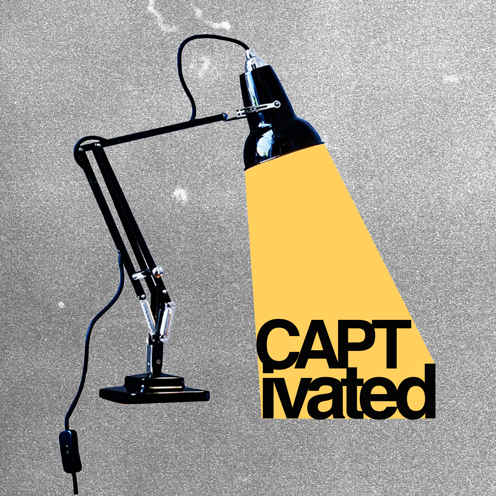

CAPTivated
What's wrong with our media?
Join political scientist Hanna Sistek, media historian Sage Goodwin, and communication scholar Julius Freeman at the Center for American Political History, Media, and Technology (CAPT) as they explore the complex relationship between media, technology, and democracy.
Trailer
Latest Episodes
Meet the Minds: Introducing the CAPTivated Podcast with Special Guest Katie Brownell
Welcome to CAPTivated! In this teaser episode hosts Hanna Sistek, Sage Goodwin, and Julius Freeman at Purdue University's Center for American Political History, Media, and Technology (CAPT) are joined by CAPT Director Professor Kathryn Cramer Brownell to discuss the podcast's mission and what listeners can expect.